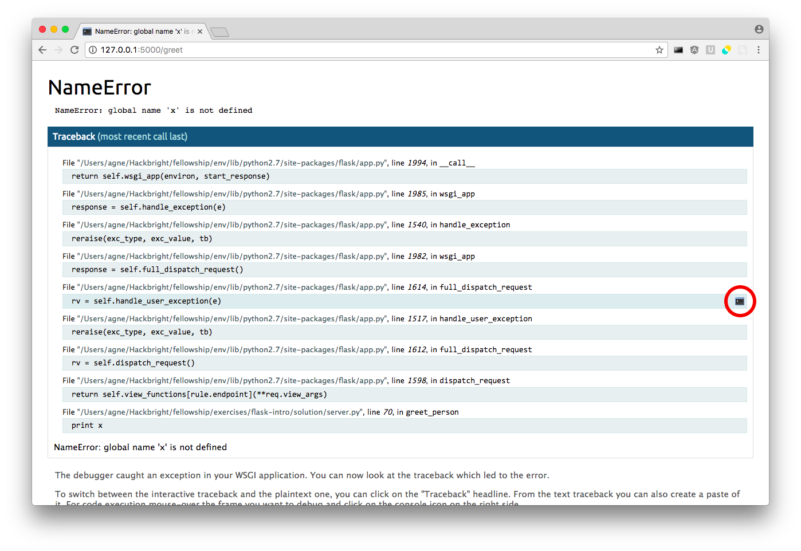

Flask Intro
In this exercise you’ll use an existing file to run a simple web application. To do this, you’ll need to set up a virtual environment and install the Flask library.
Setup
Download the materials for this exercise here.
Step 1: Getting Started
This section will guide you through setting up everything you need to run the code for this lab. You’ll want to follow similar steps when you start just about any Python project, so do read carefully and follow the instructions as they come up to get more comfortable with the commands.
Creating a Virtual Environment
Since you’ll be using an add-on Python library, let’s first create a virtual environment so that you won’t have to install the library system-wide. Using a virtual environment is also a good practice for creating larger projects, where you’ll want to make sure to keep a list of the requirements for the project with the code files.
Go to your terminal, and start by making sure you’re in the correct project directory:
$ pwd
/home/user/src/flask-intro
For this project, you should be in the flask-intro directory that you downloaded at the beginning of this exercise. If you aren’t in that directory, navigate there now.
When you’re in your project directory, create a virtual environment called env with the following command:
$ virtualenv env
Just creating the virtual environment isn’t enough, though. To install libraries in that virtual environment, you’ll want to make sure you’re using it:
$ source env/bin/activate
(env) $
Once you see (env) in your prompt, you should be good to go.
Adding Flask
Now, you’ll want to use the Python Installer Program, pip, to install the library you’ll need for this lab. That library is called flask. Let’s install it now:
(env) $ pip3 install install Flask ...(messages and progress bars)... Successfully installed flask Werkzeug Jinja2 itsdangerous markupsafe click Cleaning up...
Your output should show a bunch of messages about collecting and downloading flask and a few other libraries and then tell you which versions of those libraries were installed. Success!
Telling Git to Ignore env
Now would be a great time to start using version control for this project. If you haven’t already, go ahead and initialize a Git repository.
$ git init
Run git status now to see what files Git is looking at. You should see two untracked files: env and server.py.
You’ll want add server.py to your Git repo, but not env, which is your actual virtual environment directory. The env directory is specific to your computer, and it’s also very large, since it contains a separate copy of Python-the-program, so it doesn’t belong in version control.
To avoid checking this directory into Git, create a .gitignore file now and add env to that file. When you’re done, your .gitignore should contain:
env
Now, if you run git status, Git shouldn’t list the env directory as something it isn’t tracking. Git should just ignore the directory entirely, making it much harder for you to accidentally add env to your git repository.
Remember to add your .gitignore file to your repo!
Keeping Track of Project Requirements
It’s a very good idea to keep track of the requirements for your project — that is, the libraries your project needs to run. This way, when you look at your code a year from now, you’ll remember that you need to install the flask library and you’ll also know exactly what version you used before, in case the library’s contents change.
To see the libraries installed in an active virtual environment, you can use the command pip freeze. This command will list the names of installed libraries as well as their version numbers. Try that now (note that your output may differ from the example output below):
(env) $ pip3 install freeze
click==6.7
Flask==0.12
Jinja2==2.9.4
MarkupSafe==0.23
Werkzeug==0.11.15
itsdangerous==0.24
wsgiref==0.1.2
In the output, you should see the libraries that were installed in the “Adding Flask” section. Pretty handy, right?
Despite the name, though, pip freeze doesn’t actually “freeze” the libraries being used. It only lists the libraries and their exact versions.
Right now, that information is just going to the terminal. That’s not as useful as having the requirements persist somewhere. Fortunately, you can redirect that list to a file with the > operator in the terminal.
Let’s run pip freeze again and redirect the output to a file called requirements.txt:
(env) $ pip3 install freeze > requirements.txt
If you use the ls command to check the contents of your directory, you should see your awesome new requirements file listed. If you were to open that file, it should match the pip freeze output.
Definitely do add requirements.txt to your Git repository. That way, when you look at this project later, you’ll have in Git information on the exact versions needed.
Installing Libraries From requirements.txt
The pip program can install libraries directly from the requirements.txt file, too, so it can re-create the exact setup you had when you created the file.
You DO NOT NEED to do these steps now. These are just useful instructions for when you want to set any project up using an existing requirements file.
For example, if you want to try out your flask-intro project on your laptop, you could use this pip functionality to get your environment set up properly.
First, you’d use git clone to pull down your project:
$ cd /path/to/where/you/keep/projects/on/your/laptop $ git clone http://path-to-your-git-repo-at-github.git $ cd flask-intro
You’d then create a virtual environment:
$ virtualenv env
Next, you’d activate that environment:
$ source env/bin/activate
Finally, you’d use pip to install all of the requirements:
(env) $ pip3 install install -r requirements.txt
The -r option lets you supply a text file in the format pip freeze produces. This command should install all of the listed libraries.
To confirm that the correct packages are installed, you’d just run:
(env) $ pip3 install freeze
At this point, you should have a setup on your laptop that is exactly like what you had in lab, without having to manually keep track of the required libraries.
Step 2: Using Flask
In this lab, you’ll use the Flask framework to run your web server. You can find the documentation for the flask library at this link: Flask documentation.
You may find it helpful to open the docs in a new tab for easy access now, in case you need to look something up.
Launch Your Server
Once you’ve set up your virtual environment, activated it, and installed Flask, you should just be able to type:
(env) $ python3 server.py
* Running on http://0.0.0.0:5000/ (Press CTRL+C to quit)
* Restarting with stat
* Debugger is active!
* Debugger pin code: ...
To visit your Flask app, you can open your browser to http://localhost:5000.
The 5000 is the port number that your server is running on. Web servers that are deployed on the Internet have special privileges and run on a specific port. Since we are working locally, we need to specify the port in the URL bar. Flask by default uses port 5000.
Open your browser and go to http://localhost:5000. Now, open server.py in your editor. Give it a skim, and note the routes and view functions defined.
Right now, there’s nothing you can click in the browser to reach the view of the say_hello() function from your homepage. But you can type the correct URL for that route directly into the address bar! To see the view for that function, you just need to visit the /hello route — or, more completely, http://localhost:5000/hello. Do this now.
Congratulations: You’re serving a web app with Flask!
Modify Your Views
Let’s make some improvements to this program. Open the server.py file in your editor. To let your server keep running, you can open another terminal tab (CTRL + SHIFT + t) or open a new terminal window.
Make the /hello Route Easier to Access
It seems silly to not be able to reach /hello without typing it into the address bar.
Let’s fix that by adding some HTML. Add a link (<a>) to the HTML returned by
the / route so that when you click the link, you’re taken to /hello.
After you save this change, you should be able to view your new HTML in the browser simply by refreshing the page. That’s because you’re running your app in debug mode, which tells Flask to detect file changes when you save and restart itself automatically.
Take a look at the terminal, too. You should see a message about detected changes, reloading, and the server restarting.
Allow Users to Choose Their Compliments
This part involves editing two routes:
Modify /hello to allow the user to select a compliment from a dropdown menu or a radio button.
Modify /greet to get the compliment via request.args and display the compliment in the view.
Get Acquainted with the Debugger
Break the /greet route by adding a line of code that will raise an error.
For example, you could add a line like y = x, which would raise an error
since you have no such variable x. Save your code with the error in it, and
go the /greet route in your browser.
Take a close, careful look at the error page Flask returns when you visit this route. Notice how it shows you where the error happened, similar to the output Python shows you in the terminal when there’s an error. There is one icon that appears on the right hand side of each step in the traceback — can you explain what this icon does?
Life Without the Debugger
You could disable debug mode by changing this line in server.py:
app.run(debug=True)
If you were to set debug to False and visit /greet while there’s an error in that route, the error page you receive would be much less verbose about the problem.
While you’re developing an app, a vague error page isn’t very helpful. But if your app were deployed online, this output would be much better than giving users access to your debug console!
When you work on Flask apps, we encourage you to keep the debugger activated to help you effectively track down pesky bugs.
If you do turn debug mode off, then when you’re ready turn it back on, you will have to restart your server for the change to take effect. That’s because once you turn off debug mode, the server stops automatically updating as you make changes to files.
Go ahead and fix the intentional error you added to the /greet route now.
Pattern Matching
You now have all the example code you need to make your own route that will insult users instead. Make another route called /diss that dishes out one of several insults. Set up a separate form in the HTML returned from /hello that goes to the /diss route.
After you have done that, if there’s time, you can read the Further Study exercises.